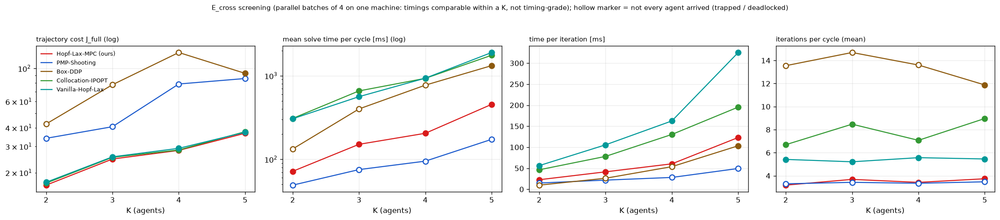
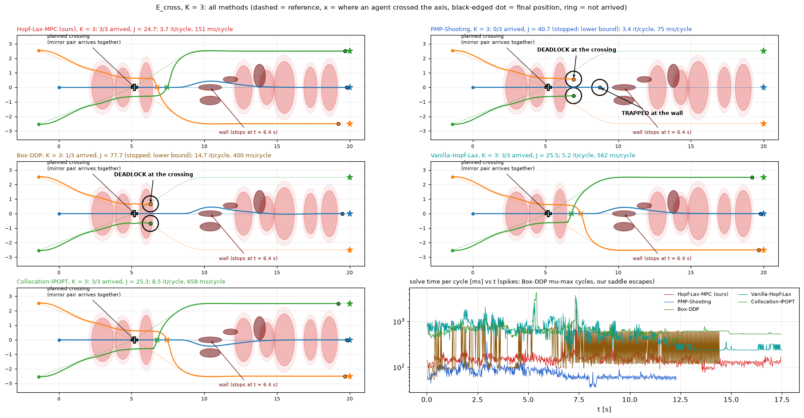
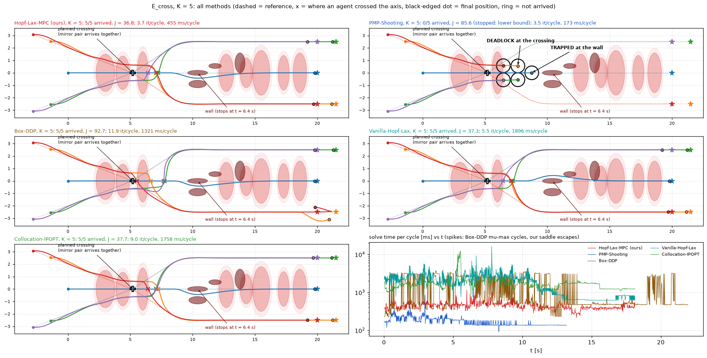
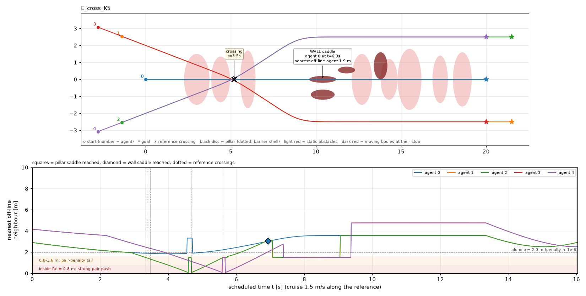
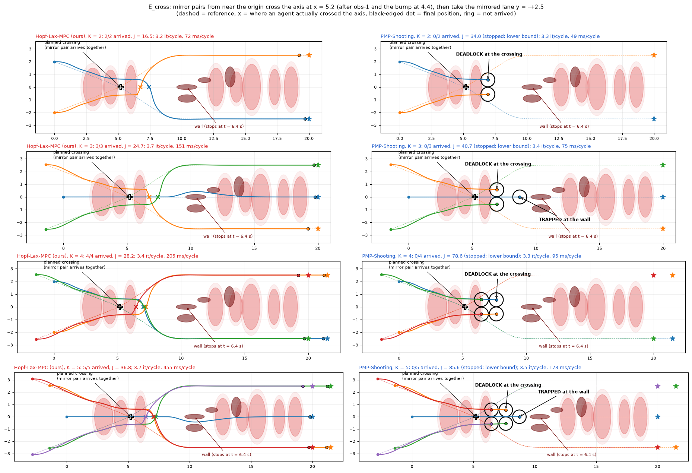
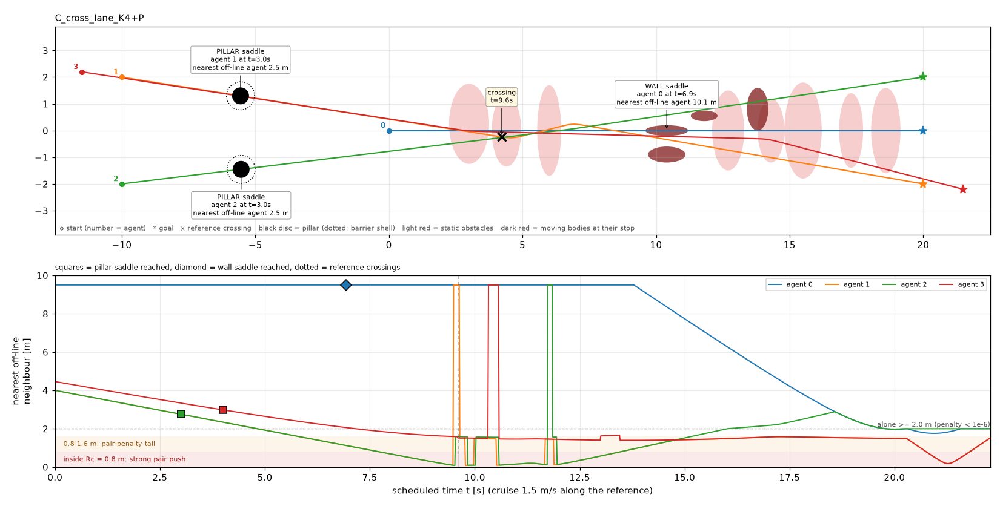
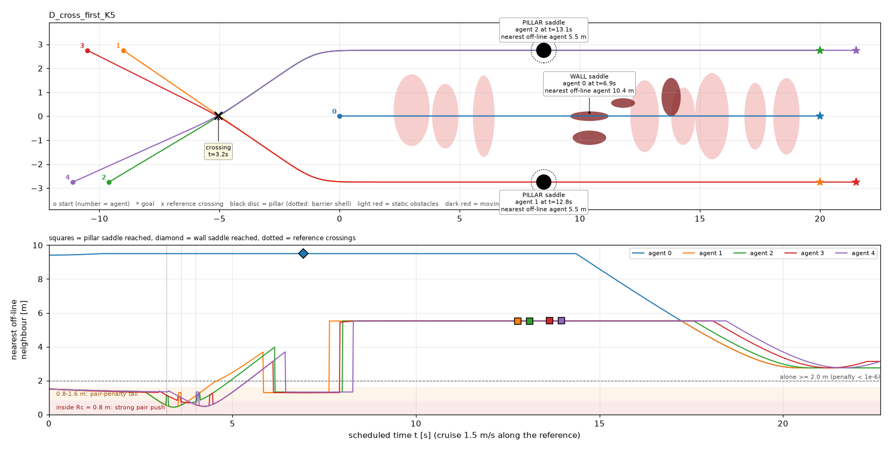
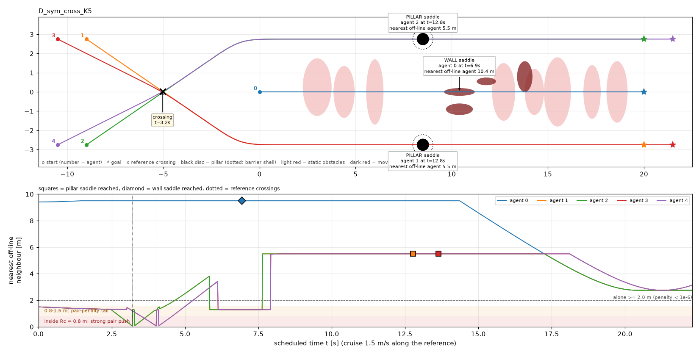

Crossing saddle (E_cross): all-baseline screening for review
Layout E_cross (section "Iteration 2" below, accepted): mirror pairs from near the origin cross the axis at x = 5.2 after
obs-1 and the first bump; the course is wall_saddle_bumps_rand_sym. K = 2–5, N = 200, shared stop 1e-6, arrival radius
0.8 m, deadlock stop 3 s / 5 cm.
- Load. Each K ran as one batch of 4 parallel processes on the Mac: ours re-run alongside the three baselines, so time ratios are comparable within a K. The absolute times are inflated by the shared load, so these numbers are not timing-grade.
- PMP. Re-run with the deadlock stop as its own batch of 4.
- MPPI. Not run: it needs CUDA (the Windows machine).
A. The demonstration points
| baseline | demonstration point | evidence, K = 2–5 |
|---|---|---|
| PMP-Shooting | Converges to the crossing saddle and never leaves it: a higher-cost solution than ours. | 0/K arrived at every K. Every mirror pair deadlocks side by side at the crossing, and the axis agent is trapped at the wall. Cost: 1.6–2.8× ours when stopped at the deadlock (11–13 s), 6.0–10.2× when run to 30 s (section C). |
| Box-DDP | Also deadlocks at the symmetric crossing, and is slow per cycle (damping-limit cycles). | K = 2, 3, 4: deadlock (0/2, 1/3, 0/4 arrived), J ≥ 2.6–4.5× ours. K = 5: it breaks the tie late, all arrive at 22.0 s (ours 18.1 s), J = 2.5× ours. 33–52 % of its cycles end at mu-max, and its time per cycle is 1.9–3.8× ours. |
| Vanilla-Hopf–Lax | Escapes like ours (exact Hessian), but at a high per-cycle cost. | Same solution: all arrive, J within 1.5–4.5 % of ours. Time per cycle 3.7–4.6× ours; forming the exact Hessian is ~75 % of its cycle time. |
| Collocation-IPOPT | Escapes, but slow. | Same solution: all arrive, J within 1–3 % of ours. Time per cycle 3.9–4.5× ours. |
| MPPI (12288 / 20480) | (planned) cost of sampling on the coupled problem. | not run: needs CUDA |
Ours: all agents arrive at every K, with the saddle escape firing at the crossing (2–6 escapes, at t = 4.9–7.4 s) and 3.2–3.7 iterations per cycle. Vanilla and IPOPT also break the tie, but they pick a different agent to go first; that is round-off, and the cost is the same either way.
B. Summary across K

Hollow markers: not every agent arrived. PMP's times come from its own batch of 4 PMP runs, a similar but not identical load. Ours' time per iteration grows with K (23 → 123 ms) because the sensitivities are dense over all 7K directions; Vanilla's grows faster (56 → 325 ms, the 7K × 7K Hessian).
| K | method | arrived | end | J_full | J / ours | it/cycle mean (max) | solve ms/cycle mean | p95 ms | ms/cycle / ours | ms/iter | notes |
|---|---|---|---|---|---|---|---|---|---|---|---|
| 2 | Hopf-Lax-MPC (ours) | 2/2 | all-arrived | 16.5 | 1 | 3.2 (14) | 72 | 107 | 1 | 22.7 | 2 saddle escapes |
| 2 | PMP-Shooting | 0/2 | deadlock | 34.0 (lower bound) | 2.1× | 3.3 (16) | 49 | 68 | 0.7× | 14.8 | |
| 2 | Box-DDP | 0/2 | deadlock | 42.4 (lower bound) | 2.6× | 13.5 (28) | 133 | 272 | 1.9× | 9.8 | mu-max 45% of cycles, 623 rejected steps |
| 2 | Collocation-IPOPT | 2/2 | all-arrived | 17.0 | 1.0× | 6.7 (44) | 308 | 430 | 4.3× | 46.3 | |
| 2 | Vanilla-Hopf-Lax | 2/2 | all-arrived | 17.2 | 1.0× | 5.4 (44) | 305 | 564 | 4.3× | 56.2 | Hessian 227 ms/cycle |
| 3 | Hopf-Lax-MPC (ours) | 3/3 | all-arrived | 24.7 | 1 | 3.7 (46) | 151 | 205 | 1 | 41.4 | 3 saddle escapes |
| 3 | PMP-Shooting | 0/3 | deadlock | 40.7 (lower bound) | 1.6× | 3.4 (15) | 75 | 113 | 0.5× | 21.8 | |
| 3 | Box-DDP | 1/3 | deadlock | 77.7 (lower bound) | 3.2× | 14.7 (28) | 400 | 782 | 2.7× | 26.2 | mu-max 52% of cycles, 1000 rejected steps |
| 3 | Collocation-IPOPT | 3/3 | all-arrived | 25.3 | 1.0× | 8.5 (45) | 658 | 923 | 4.4× | 78.1 | |
| 3 | Vanilla-Hopf-Lax | 3/3 | all-arrived | 25.5 | 1.0× | 5.2 (40) | 562 | 1123 | 3.7× | 105.7 | Hessian 427 ms/cycle |
| 4 | Hopf-Lax-MPC (ours) | 4/4 | all-arrived | 28.2 | 1 | 3.4 (21) | 205 | 269 | 1 | 60.5 | 6 saddle escapes |
| 4 | PMP-Shooting | 0/4 | deadlock | 78.6 (lower bound) | 2.8× | 3.3 (5) | 95 | 133 | 0.5× | 28.1 | |
| 4 | Box-DDP | 0/4 | deadlock | 127.9 (lower bound) | 4.5× | 13.6 (28) | 771 | 1645 | 3.8× | 53.8 | mu-max 46% of cycles, 758 rejected steps |
| 4 | Collocation-IPOPT | 4/4 | all-arrived | 28.4 | 1.0× | 7.1 (25) | 930 | 1546 | 4.5× | 130.4 | |
| 4 | Vanilla-Hopf-Lax | 4/4 | all-arrived | 29.1 | 1.0× | 5.6 (32) | 935 | 1921 | 4.6× | 162.5 | Hessian 727 ms/cycle |
| 5 | Hopf-Lax-MPC (ours) | 5/5 | all-arrived | 36.8 | 1 | 3.7 (13) | 455 | 607 | 1 | 123.1 | 6 saddle escapes |
| 5 | PMP-Shooting | 0/5 | deadlock | 85.6 (lower bound) | 2.3× | 3.5 (16) | 173 | 261 | 0.4× | 49.4 | |
| 5 | Box-DDP | 5/5 | all-arrived | 92.7 | 2.5× | 11.9 (29) | 1321 | 3200 | 2.9× | 103.4 | mu-max 33% of cycles, 2178 rejected steps |
| 5 | Collocation-IPOPT | 5/5 | all-arrived | 37.7 | 1.0× | 9.0 (53) | 1758 | 2439 | 3.9× | 195.4 | |
| 5 | Vanilla-Hopf-Lax | 5/5 | all-arrived | 37.3 | 1.0× | 5.5 (42) | 1896 | 3985 | 4.2× | 325.3 | Hessian 1458 ms/cycle |
C. Decision needed: the cost of a run that never arrives
A parked agent keeps paying tracking cost at a constant rate (state, costate and reference are all stationary), so a trapped run's J grows linearly with the run length, and any stopping time is arbitrary:
| K | PMP stopped at the deadlock | PMP run to 30 s | parked cost rate | ours (all arrived) |
|---|---|---|---|---|
| 2 | J = 34.0 at 11.3 s (2.1×) | J = 133.2 (8.1×) | 5.3 /s | 16.5 at 16.5 s |
| 3 | J = 40.7 at 12.3 s (1.6×) | J = 148.0 (6.0×) | 6.1 /s | 24.7 at 17.5 s |
| 4 | J = 78.6 at 12.2 s (2.8×) | J = 289.0 (10.2×) | 11.8 /s | 28.2 at 17.1 s |
| 5 | J = 85.6 at 13.2 s (2.3×) | J = 296.7 (8.1×) | 12.6 /s | 36.8 at 18.1 s |
Options for the deliverable:
- Fixed horizon (30 s) for the trapped methods: what we had before. The cost ratio is large (6–10×), but it depends on the chosen 30 s.
- Deadlock stop, J as a lower bound (current default): fast and conservative (1.6–2.8×), but it understates the trap.
- Recommended: deadlock stop + extrapolation to a common horizon. Log the running cost per cycle (a small change). At the
deadlock stop, J(T) = J(tstop) + rate × (T − tstop), with the rate measured over the 3 s window. This is exact for a
parked run and can be checked against the 30 s runs kept here (
results_demo_screen_E/pmp_30s/). Report J at the common T together with "arrived k/K".
D. Per-K figures (all methods)
Each figure has one map per method (dashed = reference, x = where an agent crossed the axis, ring = not arrived) and solve time per cycle against t. In that last panel, Box-DDP's mu-max cycles show as the dense band and our saddle escapes as isolated spikes.


K = 2 and 4: E_cross_K2_all.png, E_cross_K4_all.png.


E. For you to decide before the full sweep
- Cost of trapped runs: option 1, 2 or 3 of section C (recommended: 3).
- Box-DDP also deadlocks. That is a second "converges to the saddle" baseline. Keep it as a demonstration point, or is its role only the per-cycle time (mu-max)?
- Full sweep: all 7 methods × K = 2–5 = 28 runs, strictly sequential, on the Windows machine (MPPI needs CUDA). Estimated from this screening: about 3–4 h, dominated by Vanilla and IPOPT at K = 4, 5 (about 15–30 min each).
Iteration 2: E_cross design, ours vs PMP (reviewed and accepted 2026-10-21)
Course: main's wall_saddle_bumps_rand, with one change: obs-1 is moved onto the axis (below). Pair penalty
Rc = 0.8 m, Wc = 500, wc = 0.1; N = 200, shared stop 1e-6, arrival radius 0.8 m.
A. Your three points
| point | what changed |
|---|---|
| 1. start near the origin | All agents start at x ∈ [−2.8, 0] for K ≤ 5, against x = −10 to −13 in C_cross_before. Column c of pairs starts 1.5c m further back on the same line, so lane mates stay in line. |
| 2. crossing after obstacles; is a crossing always a saddle? | The crossing is at x = 5.2, after obs-1 (x = 3) and the bump at 4.4. No, a crossing is a saddle only when it is exactly symmetric (test B below). So the design builds the symmetry in exactly. |
| 3. only need PMP's cost above ours | Not every agent has to be trapped. In practice every mirror pair deadlocks, and the axis agent is trapped at the wall when there is one. PMP's cost is 6–10× ours (K = 2–5). |
B. Is a crossing inevitably a saddle? A test
K = 2, one pair from (0, ±2) crossing at x = 7.5 (first version of the layout), ours vs PMP:
| pair | Hopf–Lax-MPC | PMP-Shooting | reading |
|---|---|---|---|
| exact mirror (both reach the crossing together) | J = 92.0, 1/2 arrived (see C.1) | J = 120.1, 0/2: deadlock side by side at y = ±0.57, forever | The tie "who goes first" is an exact stationary point. PMP, a root finder, converges to it. |
| one agent 0.3 m behind | J = 3.690, 2/2 | J = 3.690, 2/2: identical to ours | The asymmetry decides who goes first. The warm start follows that smooth branch, so there is no saddle on PMP's path. |
Why. Under the mirror symmetry (y → −y with the two agents swapped), a symmetric plan cannot swap sides: both agents would have to be on y = 0 at the same x at the same time. So the symmetric stationary point is the deadlock. It is not a minimum, because one agent yielding lowers the cost. Break the symmetry slightly and the crossing becomes an ordinary smooth "A goes first" problem. Same mechanism as the wall: the wall is a trap only because the axis approach is exactly symmetric.
C. Design E_cross

- Mirror pairs. The +y agent of a pair starts at (0, 2) and the −y agent at (0, −2). Both fly a waypoint reference to the crossing (5.2, 0), then to the mirrored lane y = ∓2.5 by x = 9.0, then along the lane to the goal at x = 20 or 21.5. The references are bitwise mirror images (checked: x, y and heading arrays exactly negated), and so are the initial states.
- Odd K. An axis agent (0, 0) → (20, 0) leads; the pairs start one column back. It flies on the mirror line, so the whole system stays mirror-symmetric, and it keeps its own wall saddle.
- More pairs (K ≥ 4). Columns 1.5 m apart on the same lines. Every pair crosses at the same point, about 0.9 s apart.
- Goal rows. Mirrored, so the front column gets the far goal (21.5) and no agent has to pass a lane mate parked on its own goal (C.2).
- Course change: obs-1 moved from (3, 0.25) to (3, 0), as the new scenario
wall_saddle_bumps_rand_symincore/mpc_tuned_params.py; nothing else changes. Obs-1 was the only off-axis body before x = 9.7. The shoulder blocker (10.4, −0.9), the lane blocker (11.8, 0.55) and the door (13.8) all sit at x ≥ 9.7, past the crossing and its 1.5 m prediction horizon. So the course is exactly mirror-symmetric wherever the crossing is decided.
C.1 Iterations to get here
| version | result | change |
|---|---|---|
| crossing x = 7.5, lane join x = 11 | PMP deadlocks (J = 120). Ours breaks the tie at t ≈ 7.5 s, but by then the deadlock has crept the pair forward to x ≈ 9. The yielding agent must then cross to −y in front of the stopped wall, and it parks at (9.55, 0.58) between the wall, the shoulder and the lane blocker: a real local minimum (J = 92). | Crossing moved to x = 5.2, between the bumps at 4.4 and 6.0; lane join at x = 9.0, before the wall zone. |
| K = 4, 5 with goals 20 + 1.5c | Ours arrives, but with 600–760 saddle kicks at t ≈ 16–18 s and 2–4 iteration-cap cycles (1000 iterations). The rear column's goal lay beyond the front column's goal on the same lane, and passing a parked lane mate dead centre is a second left/right tie. | Mirrored goal rows: escapes only at the crossing (6 each), at most 21 / 13 iterations per cycle, J 36.9 → 28.2 (K = 4) and 46.4 → 36.8 (K = 5). |
C.2 Screening results (ours vs PMP)

| K | agents | Hopf–Lax-MPC | PMP-Shooting | J ratio | our saddle escapes (t) | it/cycle mean (max), ours |
|---|---|---|---|---|---|---|
| 2 | 1 pair | 2/2, J = 16.5 | 0/2, J = 133.2 (pair deadlocked) | 8.1× | 2 (5.7, 6.4 s) | 3.2 (14) |
| 3 | axis + 1 pair | 3/3, J = 24.7 | 0/3, J = 148.0 (pair deadlocked, axis agent at the wall) | 6.0× | 3 (5.2–7.4 s) | 3.7 (46) |
| 4 | 2 pairs | 4/4, J = 28.2 | 0/4, J = 289.0 (both pairs deadlocked) | 10.2× | 6 (4.9–5.7 s) | 3.4 (21) |
| 5 | axis + 2 pairs | 5/5, J = 36.8 | 0/5, J = 296.7 (both pairs deadlocked, axis agent at the wall) | 8.1× | 6 (5.2–6.6 s) | 3.7 (13) |
- The deadlock is a saddle, not a minimum. Ours fires its negative-curvature escape exactly when the pairs reach the crossing (4.9–7.4 s), then all agents arrive. PMP converges, with every cycle ending on the shared stop, onto the symmetric point and stays there.
- Interaction is present for every method. For PMP the trap is the interaction. For ours, the closest approach is 1.07 m, at the crossing.
- Untested. The other baselines (Box-DDP, Vanilla, IPOPT, MPPI) on E_cross. Any method that keeps the symmetry exactly and converges to stationary points could deadlock too; descent methods should slide off, as at the wall. K ≥ 6, where the starts reach back to x ≈ −4.2 at K = 7.
D. Early termination of deadlocked runs (new)
mpc_demo_int.py --deadlock 3.0 (the default; 0 disables it): the run ends with end = "deadlock" once
every agent that has not arrived has moved less than 5 cm over the last 3 s. Checked offline on every saved run:
| runs | would stop at | instead of |
|---|---|---|
| PMP, E_cross K = 2–5 | 11.3–13.2 s | 30 s cycle cap (≈ 55–60 % less wall time) |
| PMP, A_column K = 2 | 9.2 s | 30 s |
| ours, crossing at x = 7.5 (the parked agent) | 16.9 s | 30 s: catches a real trap of ours too |
| every completed run (ours, Box-DDP, Vanilla, IPOPT, staggered pair) | never fires | – |
Cost caveat. A stopped run's J_full is the cost accrued up to the stop. A trapped run keeps accruing
tracking cost while parked, so this is a lower bound on its 30 s cost, and the ours-vs-PMP ratios become conservative
(smaller), never inflated. If you prefer the 30 s numbers, use --deadlock 0 for the trapped methods.
E. For you to decide before the full sweep
- Accept E_cross, including the obs-1 move to y = 0? Parameters: start |y| 2.0, crossing x 5.2, lane |y| 2.5 joined by x 9.0, column spacing 1.5 m.
- K range. E_cross scales by adding pairs, but the starts move back 1.5 m per column (x ≈ −4.2 at K = 7, −5.6 at K = 9). Accept that, or cap at K = 6?
- Deadlock stop on by default (lower-bound cost), or the 30 s cap for the trapped methods?
- Sweep plan (after your OK): first a quick screen of the four other baselines on E_cross K = 2 and 4. Then the timing sweep, all methods, strictly sequential, on the Windows CUDA machine for MPPI. I will give the run count and an ETA with it.
Iteration 1 (superseded): saddle pillars, designs D1–D3 (geometry only, reviewed 2026-10-21)
1. What a design has to achieve
From the C-variant screening (c_variants.html):
- The trap. The saddle is an obstacle that is symmetric about the agent's reference. If the agent reaches it with a symmetric lateral state, "straight through" is an exact stationary point that is not a minimum. PMP-Shooting is a root finder, so it converges to that point and stays there. Ours detects the negative curvature and leaves.
- What destroyed it. A neighbour beside the agent. At 1.3 m (C_axis_side, C_cross_after) the lateral pair push pushes the agent off its line before the saddle. The saddle then becomes an imperfect pitchfork, the warm start follows the smooth branch around the obstacle, and PMP passes.
- What kept it. A neighbour in line (the A_column follower pushes only along the line), a neighbour mirror-symmetric about the line (the C_lanes pair at ±2.5 m), or nobody nearby (C_cross_before: 10 m).
| neighbour distance | 0.8 m (= Rc) | 1.0 m | 1.2 m | 1.3 m | 1.6 m | 2.0 m |
|---|---|---|---|---|---|---|
| pair cost C | 250 | 3.4 | 2.3e-2 | 1.9e-3 | 1.0e-6 | 4.7e-11 |
| |push| = |∇C| | 3.1e3 | 83 | 0.57 | 4.7e-2 | 2.6e-5 | 1.2e-9 |
So "alone" is taken as no off-line neighbour within 2.0 m while the agent approaches its saddle (the 3 m before it and the 1 m after). At that distance the push is 1e-9, numerically nothing. "Off-line" means a lateral offset from the agent's heading above 5 cm; an in-line lane mate does not count.
2. The pillar
| property | value | why |
|---|---|---|
| shape | round column, radius 0.30 m, half-height 5 m | A round section is symmetric about any line through its centre, so it also makes a saddle for diagonal lanes; the stopped wall (0.8 × 0.2 m) is symmetric only about y = 0. The tall column leaves no climb escape (Qz = 2; the bumps are deliberately low for this reason). |
| barrier | W = 500, shell w = 0.25 | The stopped wall's values, so the saddle depth is comparable. |
| static, controller-only | added to P.obs, not to the planner model P.obs_plan | The reference runs straight through it, exactly as through the stopped wall. That makes it the saddle, instead of an obstacle the planner routes around. |
| placement | on a straight stretch of the agent's reference | Straight over the 4 m approach window. Course barriers negligible there (barrier coordinate ρ ≥ 1.5), so the lateral state stays symmetric. ≥ 1.6 m from every other reference and pillar, so it touches nobody else. Alone (above). One pillar per lane, shared by the queue of in-line lane mates. |
Code (uncommitted): mpc_multi_int.add_pillars / waypoint_path / make_scene_v2(pillars=, waypoints=),
mpc_demo_int.auto_pillars (the rules above, layout suffix +P) and the D families; figures from
plot_pillar_designs.py. Each figure's lower panel shows each agent's scheduled distance to its nearest
off-line neighbour. The squares mark the moment it reaches its pillar, the diamond the wall. A marker above the dashed
2 m line means the agent is alone at its saddle; a dip into the shaded band means an interaction.
3. Design D1: pillars before the crossing (C_cross_lane_K4+P)

- Layout. C_cross_before (side pairs start 10 m behind, cross the course diagonally), with each column on one straight
line so that lane mates are in line (new family
C_cross_lane). The two pillars are auto-placed at x ≈ −5.5. - Why it should trap more agents. Every crossing lane reaches its pillar at t = 3–4 s. The nearest off-line agent is its mirrored partner, 2.5–2.75 m away, and the lane mate is in line behind. The axis agent still meets the wall alone (10 m). So all three lanes have their own saddle, against one in C_cross_before.
- Interaction. The diagonals cross at x ≈ 4–10, t ≈ 9.6–14 s, where they meet and pass the axis clutter.
- Weak point. The saddles come before the crossing. If PMP is trapped there, PMP's agents never reach the crossing, and the interaction shows up only in the runs of the methods that escape. That is exactly your objection to the current status.
- K = 7. Only one lane gets a pillar (figure): the RRT references of lane mates wobble up to 0.6 m apart, so they are not in line. Straight waypoint references would fix that.

4. Design D2: crossing first, then lane pillars (D_cross_first_K5)

- Layout. The axis agent is as before: (0, 0) → (20, 0), wall saddle. The side pair of column c starts at (−9 − 1.5c, ±2.75), crosses the axis at (−5, 0), joins the mirrored lane y = ∓2.75 at x = −1, and flies it to (20 + 1.5c, ∓2.75). References use waypoints, not RRT. There is one pillar per lane, at (8.5, ±2.75).
- The −y agent of each pair starts 0.6 m behind (stagger). It reaches the crossing 0.4 s after its partner. The scheduled separation dips to 0.45 m, well inside Rc, so every method, PMP included, has to negotiate the crossing. The stagger removes the tie (that is design D3).
- Why the pillar saddles should survive the crossing:
- Location. The crossing is in the obstacle-free zone x < 0.
- Recovery stretch. After joining its lane at x = −1, each agent has a straight 6.5 m (about 4.5 s) before its pillar window opens, to get back to a symmetric lateral state.
- At the pillar. The nearest off-line agent is 5.5 m away (the other lane), and lane mates queue in line. Course clearance ρ ≥ 1.8, so the lanes stay outside the bump and wall clutter.
- Axis agent. It meets the wall alone at t = 6.9 s (10.4 m).
- Saddles per run. 1 wall + 2 pillars, so every agent of every lane meets a saddle. K grows by adding columns; the K = 7 version (figure) has the same 5.5 m isolation for all six side agents.
- Risks.
- Lateral recovery after the crossing relies only on tracking (Qy = 0.4). If an agent still carries a lateral offset or heading error at x ≈ 5.5, its pillar saddle is imperfect and PMP may slide past. This is the first thing the screening has to check. The fix is a longer lane: the |y| = 2.75 lanes are clear of every course barrier from x = 5 to 19, so the pillar can move later (up to about x = 15, leaving room before the goals).
- The side agents never enter the bump field, so the course matters only for the axis agent.

5. Design D3: the crossing itself as the saddle (D_sym_cross_K5)

Mirror partners have identical curves in the lower panel (1/2 and 3/4 overlap).
- Layout. D2 without the stagger: each side pair is an exact mirror pair. Starts, waypoints and the corner smoothing are all mirrored, and the smoothing is linear, so the references are mirrored exactly. The course is empty around the crossing. So the joint problem is invariant under (y → −y, swap the two agents), and the pair reaches the crossing at the same instant (scheduled separation → 0).
- Why this is a saddle created by the interaction.
- The symmetric stationary point exists exactly. Under the mirror symmetry it is the one where nobody yields.
- It is costly. To swap sides symmetrically, both agents must cross y = 0 at the same x at the same time. So a symmetric plan either collides or turns back.
- Breaking the tie lowers the cost. One agent goes first, the other yields. That direction is antisymmetric, so the stationary point is not a minimum.
- The methods split. PMP, as a root finder, should converge to the symmetric point, a deadlock, the multi-agent analogue of the wall trap. Ours sees the negative curvature along the yield direction and breaks the tie.
- Interaction. Here it is present for PMP too, because the trap is the interaction. No extra obstacle is needed for this saddle. The lane pillars stay in the design as a second saddle for agents that get through the crossing.
- Risks.
- The symmetric point could turn out to be a minimum along the yield direction. For example, both agents could brake to a stop with neither crossing: still symmetric, but a deadlock that is a local minimum traps ours as well.
- Exact symmetry in floating point: the per-agent operations negate exactly. PMP's dense linear solve mixes the agents and can break the symmetry at round-off level. PMP's root contraction should damp that (the wall trap survives in the same way), but this has to be checked.
- The column pairs (c = 1) cross 0.9 s after c = 0, so the pairs interact with each other as well.
6. Side by side
| D1 pillars before crossing | D2 crossing first + pillars | D3 symmetric crossing | |
|---|---|---|---|
| saddles | wall + 1 pillar per lane | wall + 1 pillar per lane | wall + 1 joint saddle per crossing pair + lane pillars |
| does PMP meet the interaction? | no (trapped before it) | yes (crossing at t ≈ 3–4 s, before its pillar) | yes (the trap is the interaction) |
| agents with a saddle | all | all | all |
| K scaling | K = 7 needs straight references | add columns (K = 7 drawn) | add columns |
| main risk | demo objection | lateral recovery before the pillar | symmetric point may be a minimum, or broken at round-off |
| new code | none beyond pillars | waypoint references | waypoint references |
7. For you to decide
- Which designs to screen: D2, D3, both, and/or D1.
- Parameters (all in
mpc_demo_int.py):- lane |y| = 2.75
- crossing x = −5
- lane join x = −1
- pillar x = 8.5
- stagger 0.6 m
- pillar radius 0.3 m
- alone distance 2.0 m
- Proposed screening (needs your OK): ours + PMP only, K = 3 and 5, for the chosen designs. On the A_column check here, a K = 2 run took about 1 min (ours) and 2 min (PMP, to the 30 s cap). Rough estimate: 4 runs per design, about 6–8 min per design in parallel. Screening only; the timing comparison comes later, as sequential runs.